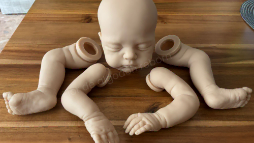

Qué es un bebé reborn: guía completa
Descripción histórica, técnica y cultural del fenómeno reborn

Qué es un bebé reborn
El bebé reborn es una muñeca artesanal fabricada en vinilo o silicona con el objetivo de reproducir la apariencia de un recién nacido con alto nivel de realismo.
Se trata de piezas realizadas manualmente, donde cada ejemplar presenta variaciones propias debido a su proceso artesanal.
Origen e historia
El origen del bebé reborn no está completamente definido. Existe un relato extendido que sitúa antecedentes en la Europa de posguerra, donde se reutilizaban muñecas dañadas por necesidad.
Este relato forma parte de la tradición del movimiento, aunque no está plenamente documentado como origen directo.
Según Encyclopaedia Britannica, el movimiento moderno se consolida en los años 90 en Estados Unidos, cuando artistas comienzan a transformar muñecas industriales en piezas hiperrealistas.
El movimiento en los años 90
- Eliminación de pintura original
- Reaplicación de capas de pintura
- Creación de detalles anatómicos
- Implantación de cabello manual
- Inserción de peso interno
El término reborn hace referencia a la transformación de una muñeca industrial en una pieza completamente nueva.
Expansión internacional
Con la llegada de Internet, el fenómeno se expande a nivel global durante los años 2000. Europa y España adoptan esta práctica dentro de contextos de artesanía y coleccionismo.
El desarrollo de comunidades online permite la difusión de técnicas y la creación de un mercado especializado.
Evolución técnica
- Capas de pintura más complejas
- Mayor nivel de detalle en la piel
- Cabello implantado manualmente
- Uso de materiales avanzados
Significado actual
En la actualidad, los bebés reborn se interpretan como objetos de colección, piezas artísticas y, en algunos casos, elementos con valor emocional.
Su importancia no reside únicamente en el realismo técnico, sino también en la relación subjetiva que cada persona establece con la pieza.
Conclusión
El bebé reborn representa la evolución de una técnica artesanal que ha derivado en un fenómeno artístico y cultural contemporáneo.